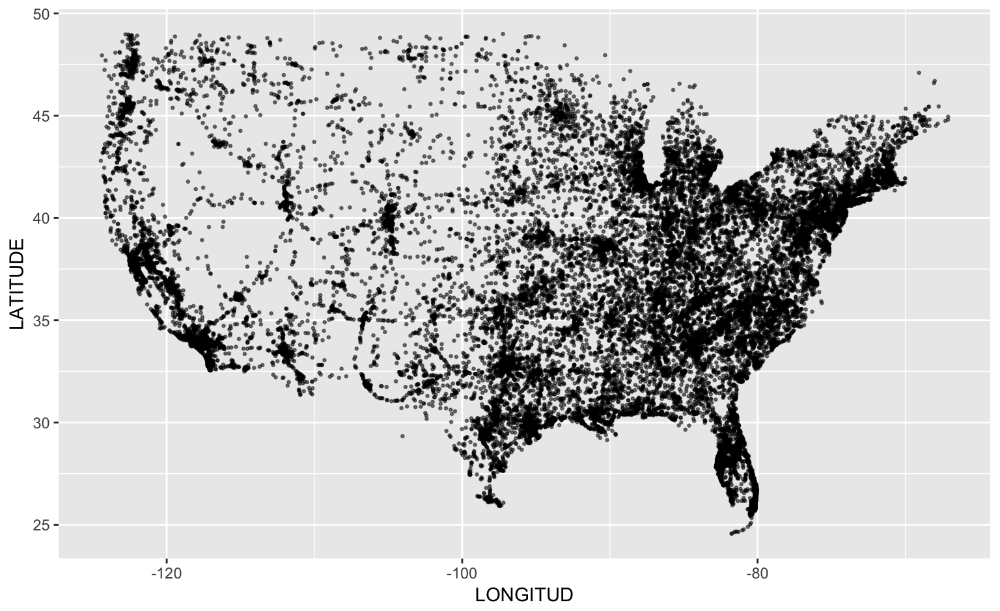
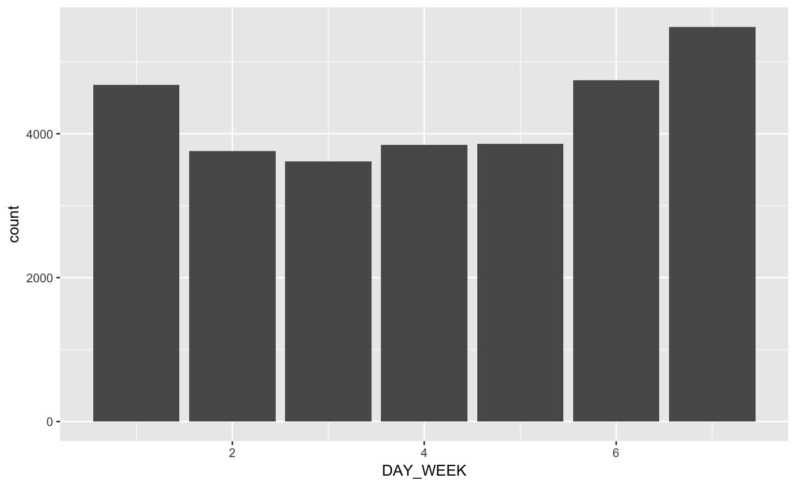
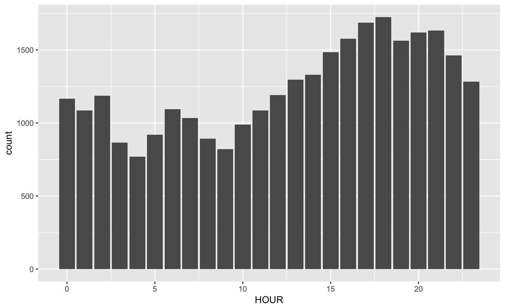
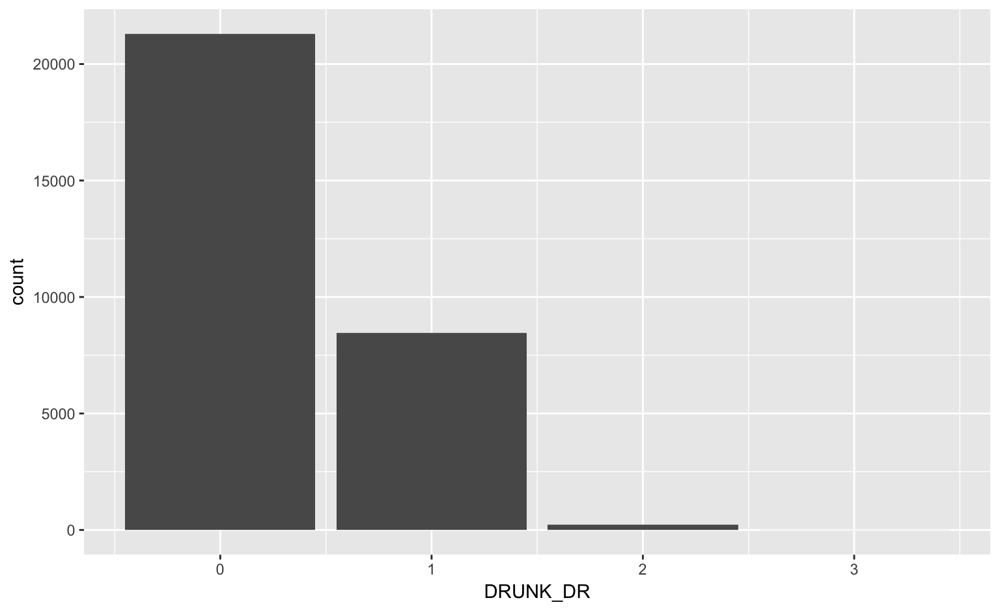
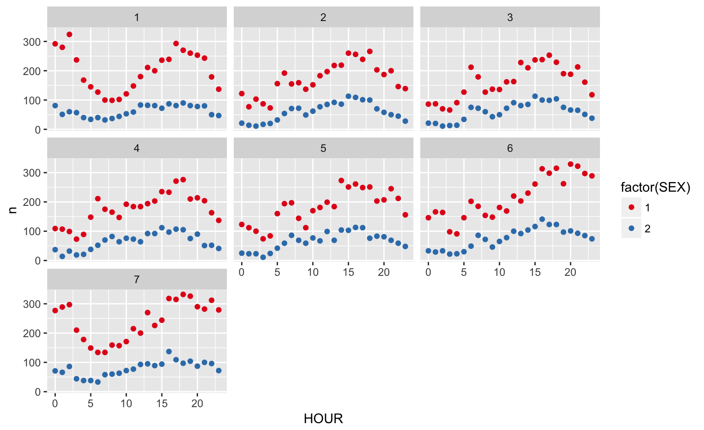

Heike Hofmann
Resources:
vignette("databases", package="dplyr") (for working with dplyr and databases)vignette("two-table", package="dplyr") (for joining tables - we’ve covered this before)What is a database?
Why are they important?
; at the end of each line. The semi-colon can be used to separate each SQL statement in a system that allows multiple command to be executed in a call to the server.
Student
| ID | Name | Major |
|---|---|---|
| 1234 | Never Ever | Math |
| 4321 | Some Times | CS |
Attendance
| ID | Date | Status |
|---|---|---|
| 1234 | 02-Feb | absent |
| 1234 | 09-Feb | absent |
| 4321 | 02-Feb | present |
| 4321 | 09-Feb | absent |
Select * from student leads to
| ID | Name | Major |
|---|---|---|
| 1234 | Never Ever | Math |
| 4321 | Some Times | CS |
Student
| ID | Name | Major |
|---|---|---|
| 1234 | Never Ever | Math |
| 4321 | Some Times | CS |
Attendance
| ID | Date | Status |
|---|---|---|
| 1234 | 02-Feb | absent |
| 1234 | 09-Feb | absent |
| 4321 | 02-Feb | present |
| 4321 | 09-Feb | absent |
Select Name from student where Major='Math' leads to
| Name |
|---|
| Never Ever |
Student
| ID | Name | Major |
|---|---|---|
| 1234 | Never Ever | Math |
| 4321 | Some Times | CS |
Attendance
| ID | Date | Status |
|---|---|---|
| 1234 | 02-Feb | absent |
| 1234 | 09-Feb | absent |
| 4321 | 02-Feb | present |
| 4321 | 09-Feb | absent |
Select ID, count(ID) from Attendance where Status='absent' leads to
| ID | Frequency |
|---|---|
| 1234 | 2 |
| 4321 | 1 |
dplyr package works (almost) the same for local data frames as tables in a databasedplyr functionality: group_by, summarize, transform, filter, arrange, selectfars2014 is a SQLite database of the 2014 data provided by FARS, consisting of three tables: accidents, person, and vehicle (make sure to download fars2014 from our github repo).connecting to the database:
library(dplyr)
fars <- src_sqlite("../data/fars2014")
fars## src: sqlite 3.8.6 [../data/fars2014]
## tbls: accidents, person, vehicleUse tbl to connect to a specific table (dataset) in the database
note: R does not load the data into the session
accidents <- tbl(fars, "accidents")
accidents## Source: query [?? x 50]
## Database: sqlite 3.8.6 [../data/fars2014]
##
## STATE ST_CASE VE_TOTAL VE_FORMS PVH_INVL PEDS PERNOTMVIT PERMVIT
## <int> <int> <int> <int> <int> <int> <int> <int>
## 1 1 10001 1 1 0 0 0 2
## 2 1 10002 1 1 0 0 0 1
## 3 1 10003 2 2 0 0 0 7
## 4 1 10004 3 3 0 0 0 5
## 5 1 10005 1 1 0 0 0 1
## 6 1 10006 1 1 0 0 0 1
## 7 1 10007 3 2 1 0 0 2
## 8 1 10008 2 2 0 0 0 4
## 9 1 10009 3 3 0 0 0 5
## 10 1 10010 2 2 0 0 0 6
## # ... with more rows, and 42 more variables: PERSONS <int>, COUNTY <int>,
## # CITY <int>, DAY <int>, MONTH <int>, YEAR <int>, DAY_WEEK <int>,
## # HOUR <int>, MINUTE <int>, NHS <int>, ROAD_FNC <int>, ROUTE <int>,
## # TWAY_ID <chr>, TWAY_ID2 <chr>, MILEPT <int>, LATITUDE <dbl>,
## # LONGITUD <dbl>, SP_JUR <int>, HARM_EV <int>, MAN_COLL <int>,
## # RELJCT1 <int>, RELJCT2 <int>, TYP_INT <int>, WRK_ZONE <int>,
## # REL_ROAD <int>, LGT_COND <int>, WEATHER1 <int>, WEATHER2 <int>,
## # WEATHER <int>, SCH_BUS <int>, RAIL <chr>, NOT_HOUR <int>,
## # NOT_MIN <int>, ARR_HOUR <int>, ARR_MIN <int>, HOSP_HR <int>,
## # HOSP_MN <int>, CF1 <int>, CF2 <int>, CF3 <int>, FATALS <int>,
## # DRUNK_DR <int>dplyr commands do not actually download the (whole) databasecollect() to extract all records. This returns a tibbleaccidents %>%
filter(between(LONGITUD, -130, 0)) %>%
collect() %>%
ggplot(aes(LONGITUD, LATITUDE)) +
geom_point(alpha = 0.5, size = 0.5)
Connect to the FARS database (using the SQLite database fars2014). Answer the following questions:
DAY_WEEK)?HOUR)?DRUNK_DR)?
dayweek <- accidents %>% group_by(DAY_WEEK) %>% tally()
dayweek %>% collect() %>%
ggplot(aes(x = DAY_WEEK, weight=n)) + geom_bar() 
hours <- accidents %>% group_by(HOUR) %>% tally()
hours %>% filter(HOUR < 25) %>% collect() %>%
ggplot(aes(x = HOUR, weight=n)) + geom_bar() 
drunk <- accidents %>% group_by(DRUNK_DR) %>% tally()
drunk %>% collect() %>%
ggplot(aes(x = DRUNK_DR, weight=n)) + geom_bar() 
Connect to the person table. Identify drivers (PER_TYP == 1, see fars manual ) and subset on them.
person <- tbl(fars, "person")
drivers <- person %>% filter(PER_TYP == 1)left_join, right_join work in the same way on databases as on local data frames.We want to join drivers and accidents:
driver_acc <- left_join(drivers, accidents)## Joining, by = c("STATE", "ST_CASE", "VE_FORMS", "COUNTY", "DAY", "MONTH", "HOUR", "MINUTE", "ROAD_FNC", "HARM_EV", "MAN_COLL", "SCH_BUS")Note that there are a lot of variables with the same name - we actually include all of these variables
DAY_WEEK), hour of the day (HOUR) and gender (SEX). Visualize the results!
driver_acc %>% group_by(DAY_WEEK, HOUR, SEX) %>%
tally() %>%
filter(HOUR < 25, SEX < 8) %>%
collect() %>%
ggplot(aes(x = HOUR, y = n)) +
geom_point(aes(colour = factor(SEX))) +
facet_wrap(~DAY_WEEK) +
scale_colour_brewer(palette="Set1")